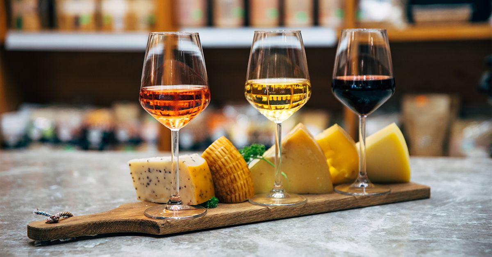

03 · Esdeveniments gastronòmics · per GastroGoan
Le Petit Comité. Una taula, moltes històries.
Esdeveniments gastronòmics privats, tastos guiats i xef a domicili. Ens ocupem de tot —menú, compra, muntatge, servei i neteja— perquè tu només siguis a taula.
Què fem
Tres maneres d'asseure's a taula.
Esdeveniments gastronòmics
Disseny i execució de celebracions privades, pop-ups i sopars temàtics: menú a mida, compra i logística, muntatge i servei professional. Adaptable a qualsevol format i aforament, amb coordinació integral.
Tastos i maridatges
Sessions guiades per descobrir productes i combinacions —vins, cerveses, olis, formatges—, amb selecció de mostres, guió de tast i material de suport. Per a grups reduïts i accions de fidelització.
Xef privat
No és un esdeveniment puntual: cuino a casa teva cada setmana o cada mes, amb la compra feta i àpats a punt, perquè mengis bé sense pensar-hi. També disponible per a un dia concret si ho prefereixes.


Com funciona
De la teva idea a la taula, en tres passos.
M'expliques l'ocasió
Data, nombre de persones, lloc i què vols celebrar. Per WhatsApp o email.
Proposta en 48 hores
Menú, format i pressupost tancat. Sense sorpreses ni extres amagats.
Ens ocupem de tot
Compra, muntatge, servei i neteja. Tu només t'asseus a taula.
Menús d'exemple
Sis maneres d'asseure's a taula.
Per a cada ocasió
Què celebrem?
Una altra ocasió? Escriu-me i la muntem.
Escriu-me.
Data, tipus d'esdeveniment i persones. Proposta en 48 hores.